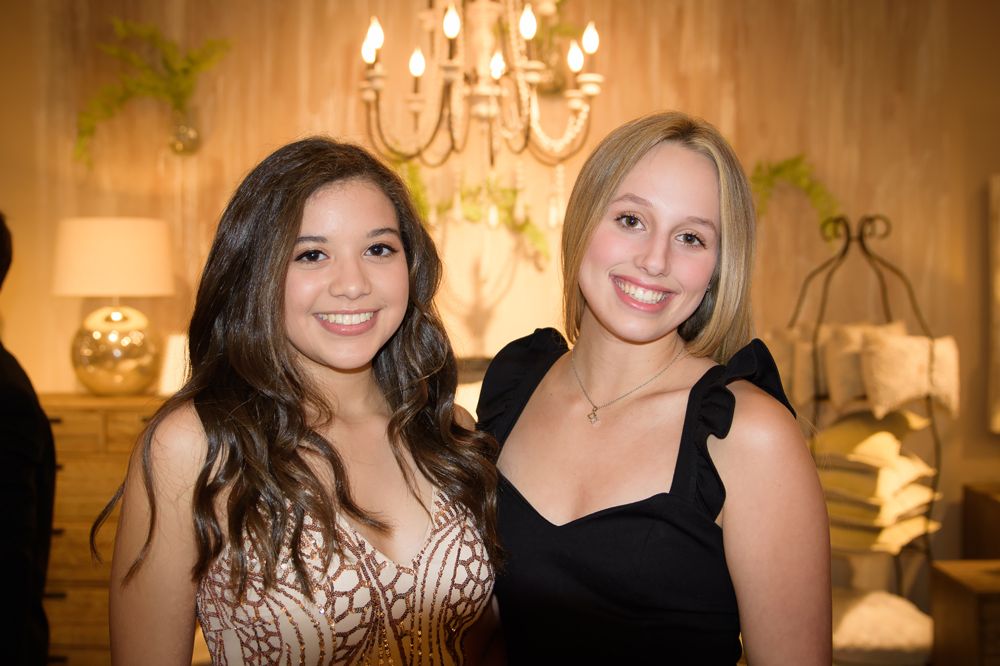

Hello! My name is Jourdan Gundersen (I'm the one on the right in the photo). I am 18 years old and currently I live in Lawrence, Kansas but I am originally from Overland Park, Kansas. Right now I work at a real estate office in Lawrence but I also work at one of the Dillon's there as a Starbucks barista in training. I'm a serious work-aholic.
My favorite color is blue. My hobbies include playing with my dogs Fred and Ted, shopping, and collecting jewelry. I aspire to be a successful real estate agent and investor and a professional web developer.